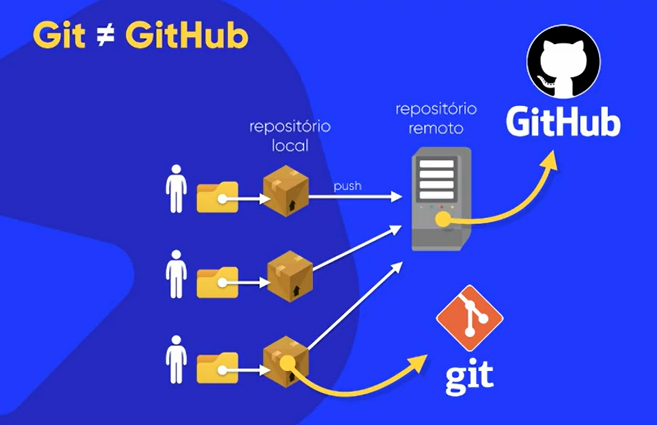

O Git é um software de controle de versão (VCS). O versionamento utilizado no Git, basicamente, é de código, mas podemos fazer versionamento de outras coisas também.
Um exemplo de versionamento pode ser de um site criado, por exemplo, no qual os arquivos HTML ficariam dentro de uma pasta dedicada ao mesmo, e dentro dela podemos ter outras pastas para CSS, Javascript, arquivos de imagem, mídia, etc.
Para mostrar uma prévia pra um cliente, por exemplo, podemos compactar essa mesma pasta num ZIP, por exemplo, mas à medida que vamos fazendo atualizações nesse site, podemos acumular muitos ZIPs, que pode ser difícil pra procurar uma versão anterior especificada. Podemos fazer o back-up em uma nuvem, como o Google Drive ou o Dropbox, mas isso torna complicado para encontrar determinadas coisas em versões anteriores.
Isso complica ainda mais quando temos muitas pessoas numa equipe trabalhando num mesmo projeto (como por exemplo, um pra design, um pra front-end e um para back-end). É aí que o Git entra.
O Git é como uma máquina do tempo
, ele permite voltar a um ponto específico de um arquivo, e ele só armazena as alterações que são feitas num arquivo, e não várias versões do arquivo inteiro (por exemplo, ao alterar um HTML adicionando duas linhas, ele só faz a atualização dessa alteração, e não uma outra cópia do mesmo arquivo atualizado).
Num versionamento centralizado ou linear, vários usuários fazem a alteração de um mesmo projeto que fica num mesmo servidor (que vamos chamar de commitar
). Já o Git utiliza o sistema distribuído, que cada equipe commita seu projeto no seu computador, no caso, isso é um versionamento local, mas ele pode ser ligado a um repositório remoto único no qual os usuários farão o push
de seus repositórios locais para ele (push
seria o mesmo que enviar).
Veja a imagem de um exemplo:
As principais vantagens do versionamento são essas:
O Git, exemplificado anteriormente, é o repositório local onde guardamos
as versões do arquivo, nas quais ele só salva as alterações com os commits
, ao invés de fazer cópias de arquivos com as alterações.
O GitHub é o repositório remoto no qual nós salvaremos nossos projetos versionados no Git. O GitHub é uma plataforma social para programadores, tal como uma rede social, onde, além do versionamento, nós podemos participar de projetos de outros usuários e seguir perfis tais como uma rede social mesmo.
No GitHub, podemos ter:
Além do GitHub, temos também o GitLab, BitBucket, Phabricator, Gogs, Kallithea, entre outros.
Primeiramente, faça o login no GitHub Desktop indo em Files, Options e em Account, clique em Sign into github.com. Ele abrirá o navegador padrão do sistema para que o login possa ser feito.
Só relembrando, lembra do caso onde cada desenvolvedor de um projeto realiza seus commits em seus computadores locais com o Git. Depois todos eles fazem o push para o repositório remoto no GitHub.
No GitHub Desktop, vamos criar um repositório de exemplo (como Ola-Mundo, evite acentuações e espaços). Clique em Create a New Repository on Your Local Drive e ele criará um repositório Git no seu computador. Marque a opção Initialize this repository with a README. Não se preocupe no momento com o Git Ignore e o License (mas nessa podemos escolher uma licença como a GPL ou a Apache).
No caso, ele criará um repositório local onde colocaremos nossos códigos. Nessa mesma pasta criada, tem um diretório oculto com o nome .git
onde nós temos os dados do repositório.
PS: Pode ser que tenhamos que configurar o usuário para realizar os commits, nesse caso abrimos o Open Git Settings (ou indo e File e Options) e em Git colocamos o nome e o e-mail do usuário, além do branch principal padrão para novos repositórios (como master ou main).
Ao criar o repositório, ele já fará um commit automaticamente, mas podemos desfazer ele clicando em Undo. Podemos ver em History para ver as alterações feitas no repositório. Para fazer um commit no repositório local, coloque o nome dele e clique em Commit logo abaixo.
Para publicar o repositório remotamente no GitHub, vá na parte de cima do GitHub Desktop e clique em Publish Repository. Ele pedirá o nome e a descrição, e se o repositório sera privado (se quiser ele público, basta desmarcar essa opção). Um repositório privado pode ter até 3 colaboradores, já um público a quantidade de colaboradores é ilimitada.
PS: Podemos abrir o repositório local no VS Code ou Sublime Text para editar os códigos dos programas. Outras IDEs também costumam ter integração com o Git.
Abrindo um arquivo, como o ReadMe, podemos editar ele, e o GitHub Desktop já perceberá as alterações e sugerirá fazer um commit, então fazemos o commit colocando o nome dele, e ele já estará atualizado localmente. Para publicar no repositório remoto vinculado, clique em Push Origin.
Podemos alterar os arquivos diretamente no site do GitHub, podemos por exemplo editar o README e clicar em Commit Changes. Coloque o motivo do Commit e escolha a opção Commit Directy to the master Branch. Futuramente podemos criar outras branchs para o mesmo projeto.
Para atualizar nosso repositório local, que teve alterações, clique em Fetch Origin, e depois que ele terminar, em Pull Origin para ele puxar o que está no repositório remoto para o nosso repositório local.
Para atualizar o repositório local com as alterações do repositório remoto no GitHub, clique em Fetch para ele buscar os dados, e se tiver alguma alteração, ele mostrará a opção Pull (puxar) ou Push (enviar).
PS: As opções de Fetch, Pull, Push, entre outras, estão no menu, em Repository. Também não é recomendado fazer os commits no branch principal (no caso, o master).
Para clonar um repositório (que pode ser de outro usuário), nós abrimos a página do GitHub onde está o repositório, como esse aqui: https://github.com/gustavoguanabara/html-css
Podemos baixar diretamente como ZIP ou usando as linhas de comando, mas como estamos utilizando o GitHub Desktop, podemos copiar o link do Git e colar no programa, em Clone Repository, mas podemos clicar diretamente na opção Open with GitHub Desktop que ele abrirá o repositório para ser clonado pro seu computador. Ele copiará absolutamente tudo que está no repositório especificado.
Lembrando que nós não podemos alterar diretamente um repositório de outras pessoas, para isso devemos usar Issues, que aprenderemos mais pra frente.
PS: Para saber se uma pasta estiver versionada, basta ver se ele tem a pasta .git
oculta na raiz dessa pasta.
Para remover um repositório local, basta ir em Repository e em Remove.
PS: Todas as branches são copiadas nos repositórios clonados, mas apenas a master é a que permanece ativa. Veremos isso mais pra frente.
Para pegar um projeto antigo e versionar ele com Git, abra o GitHub Desktop, clique em File e em New Repository, da mesma forma, coloque o nome do repositório como antes. Caso você tenha uma organização, você pode escolher ela (isso é só pra quem tem empresas cadastradas no GitHub). Daí é só arrastar os códigos para a pasta do repositório e o GitHub Desktop já vai identificar as mudanças.
PS: Caso tenha algum arquivos inútil na pasta, podemos excluir ela no GitHub Desktop, no caso ele vai criar um arquivo oculto com o nome .gitignore onde ele vai ignorar os arquivos especificados. Daí, é só fazer o Commit e o Push pro repositório remoto.
Daí, num outro computador, podemos clonar o repositório como já aprendemos, clicando pra abrir no GitHub Desktop e ele abrirá o programa para clonar. Só lembrando que quando você clona um repositório, ele só é clonado pro repositório local, quando você copia outro projeto pro seu perfil, seria o fork.
Para escrever num comentário do GitHub, podemos usar o @ pra fazer referência ao usuário, e colocar links com a sintaxe [Texto do Link](URL) (como por exemplo, [Abrir o Google](https://www.google.com.br/)).
A Issue é um problema, uma questão, um levantamento de alguma coisa. Vamos supor que a gente descobre um problema num programa de código aberto, como por exemplo, o VS Code. Daí a gente pega os erros do programa e manda uma mensagem no projeto dele no GitHub, para ser corrigido pelos desenvolvedores. Quando a gente é programador experiente, podemos clonar o repositório deles pra nós mesmos resolver. Daí, nesse caso, depois de resolvermos, nós fazemos um fork desse projeto, crio uma branch só pra resolver esse problema, nós corrigimos da nossa forma, e abrimos um pull request (no caso de nós resolvermos o problema, e mostramos pro desenvolvedor do projeto). Caso ele ache necessário, ele pode tornar sua ramificação parte do projeto, e a gente fica como colaborador do projeto.
Vamos por exemplo, ir no repositório oficial da Microsoft e procurar o repositório principal do VS Code e ver suas issues: https://github.com/microsoft/vscode
As issues, no caso, são problemas que nós identificamos mas que não sabemos as resposta. Elas podem estar abertas ou fechadas (no caso de finalizada ou descartada, por exemplo). Podemos pesquisar sobre erros específicos, inclusive pelo número. Podemos ter inclusive prints dos bugs dos programas. É recomendado fazer uma busca antes de enviar uma issue para não duplicar as mesmas.
Abra o repositório do curso: https://github.com/gustavoguanabara/git-github
Vamos abrir uma issue de exemplo nesse repositório. Vá em issues e em New Issue, colocamos um título e o conteúdo da mesma, com todos os detalhes e clique em Create. Qualquer pessoa pode submeter issues em qualquer repositório e também podemos comentar nas issues. Podemos também fechar e reabrir nossas próprias issues, além de trancar e destrancar conversas, destacar (em pin issue) e excluir as issues (no final da tela, no canto direito). Podemos formatar, colocar imagens e outras coisas, para prever as mudanças vá em Preview.
PS: Uma issue pode ser fechada e reaberta pelo dono do repositório. Ele pode também trancar e destrancar uma conversa, destacar e excluir a issue.
Vamos testar criando uma issue no repositório acima, para formatar, basicamente fazemos assim, usando essas marcações:
# Título 1## Título 2### Título 3#### Título 4##### Título 5###### Título 6**Negrito**_Itálico_> Citação`Código`[Link](https://nomedosite.com.br/)@CitarUserAlém de usar as marcações, podemos também usar as formatações usando as opções da caixa de texto. Lá temos outras opções, como para criar listas ordenadas e não ordenadas. Podemos também fazer o upload de imagens, que serão linkadas para o comentário.
Para fazer uma tabela, podemos formatar assim, como exemplo:
Num | Nome | Nota
---|---|---
1 | Gustavo | 8,5
2 | José | 10,0
3 | Maria | 9,0
Para um comando de mais de uma linha, podemos fazer assim:
```
num = int(input("Digite um valor: "))
if num % 2 == 0:
printf(f"O valor {num} é par!")
else:
printf(f"O valor {num} é ímpar!")
```
E para listas:
* Item 1
* Item 2
* SubItem 1
* Item 3
Podemos também colocar emojis nos comentários, inclusive podemos usar código do Emojipedia, mas eles não podem ser usados nos títulos, nesse caso cole os emojis diretamente. Esse é um repositório com os emojis: https://github.com/ikatyang/emoji-cheat-sheet
Branch significa ramificação, é como uma árvore
com vários ramos, e o tronco principal seria o ramo mestre, essa é a ideia de branches no Git, onde temos a branch principal (denominada como main ou master) e temos outras branches (ramos) que partem dessa branch principal e que podem ser fundidas com a branch principal. O ramo principal (branch master) é obrigatório, os outros não são obrigatórios.
Sempre que fazemos uma alteração num projeto no Git, nós fazemos o commit (criar uma versão nesse ponto) e assim ele cria uma nova subversão. Esse conteúdo da branch master pode ser feito o push (enviado) para a origin (origem) (ou seja, tirar do repositório local para enviar pro repositório remoto, no caso, do GitHub).
PS: Evite commitar tudo na branch master, para o caso de não fazer besteiras no programa principal.
Vamos supor que nós façamos um site com o repositório Git, a partir do primeiro commit na master, podemos criar uma branch baseada no mesmo (por exemplo, pra design) e também podemos commitar nessa nova branch criada, que não afetará a branch master. No final, podemos fazer o merge (fusão) da branch nova com a master. Podemos criar quantas branches precisar, e cada uma tem seus commits independentes, e podemos excluir também essas branches.
Vamos criar um repositório local de teste para nós exemplificarmos na prática. Vamos publicar ele no GitHub. Crie um código qualquer nele e commit ele no master, e depois publique no GitHub fazendo o push.
Para criar uma nova branch localmente, vá em Branch e em New Branch e coloque o nome dela (por exemplo conteudo) e ele vai dar a opção para deixar as mudanças em master ou trazer minhas mudanças para conteúdo. Faça as alterações na branch e faça o commit nela e depois publique com o push. Seus commits não interferirão na branch principal.
Vamos da mesma forma fazer uma branch pra design, indo no mesmo local, só que dessa vez escolhemos de qual branch ele bifurcará, no caso, será também bifurcação da master.
Na parte de cima podemos escolher qual a branch atual (current), para publicar no repositório remoto, basta ir em Publish Branch.
Num projeto profissional, cada setor de um projeto (como design, front-end e back-end) pode ter sua própria branch pra mexer. Todas as branchs podem ser publicadas no repositório remoto, assim como acontece localmente.
PS: Ao mudar a branch no GitHub Desktop, ele automaticamente atualizará o código no Sublime Text ou no VS Code. Outras IDEs também atualizarão seus códigos automaticamente.
Vamos mexer na branch de design e fazer outras edições e faça seu commit e sua publicação, elas e seus commits não interferirão na branch principal nem na de conteúdo.
Vamos supor que o cara do design mexeu, por exemplo, no título, e o do conteúdo também mexeu. Isso pode gerar conflito na hora de fundir (merge).
Para fazer um merge, coloque o master como Current Branch, e em Branch, clique em Merge into Current Branch e escolha a branch a ser fundida (no caso, a conteudo) com a master e clique em Create a Merge Commit. Esse merge é local, então devemos fazer um push pro repositório remoto.
Só que da mesma forma, o design também será fundido com o master, isso dará um conflito, e na hora de fundir o GitHub Desktop avisará isso. Clique normalmente em Create a Merge Commit e ele abrirá pra resolver o conflito, e você pode abrir no editor, que deixará os códigos destacados, e você poderá corrigir no editor. Daí é só voltar no GitHub Desktop e continuar o merge. Depois de tudo, podemos fazer o push pro repositório remoto.
PS: Uma branch pode também ser deletada, para isso vá em Branch e em Delete Branch, caso deseje que ela seja apagada do repositório remoto, marque essa opção, as fusões com a master não serão alteradas.
Podemos hospedar sites estáticos simples (HTML, CSS e Javascript) no GitHub Pages para que ele possa ser acessado online por outras pessoas.
Para isso, vá no repositório no GitHub, vá em Settings, Pages e em Source, escolha Deploy from a Branch, e em Branch escolha a branch desejada para ser exibida (geralmente a master mesmo), e em Save. Espere um minuto e seu site estará num link como https://usuariodogithub.github.io/NomeDoRepositorio/
Podemos fazer um fork de um projeto já existente de outro usuário no GitHub. Para isso, acesse o repositório desejado e clique no botão Fork, geralmente localizado no canto superior direito da página. Isso criará uma cópia desse repositório no seu próprio perfil do GitHub. Você pode escolher se deseja copiar apenas a branch principal (geralmente chamada de main ou master) ou todas as branches do projeto.
Tudo o que estiver no repositório original será copiado para o seu repositório forkado. Qualquer alteração que você fizer no seu fork não afetará o repositório original.
Se quiser sugerir que suas alterações sejam incorporadas ao repositório original, você pode criar um Pull Request. O dono do repositório original poderá revisar suas mudanças e decidir se deseja integrá-las ao projeto.
Para fazer um Pull Request, acesse o seu repositório forkado, faça as alterações desejadas, realize os commits e envie (push) as alterações para o seu repositório remoto no GitHub. No GitHub, clique no botão Contribute e selecione a opção Open Pull Request. Escreva um título, adicione uma descrição explicando suas mudanças e clique em Create Pull Request.